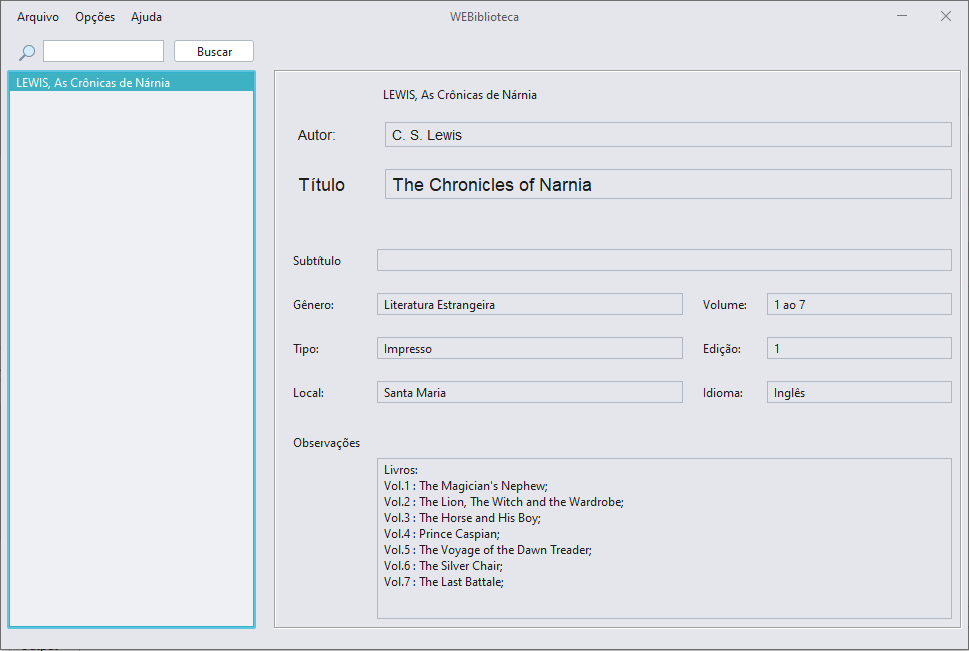
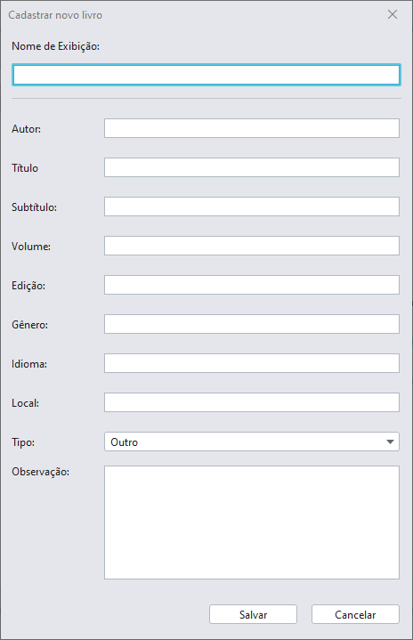
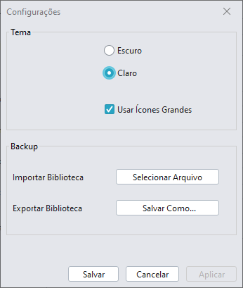
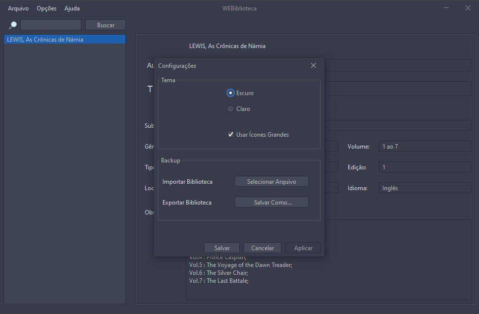
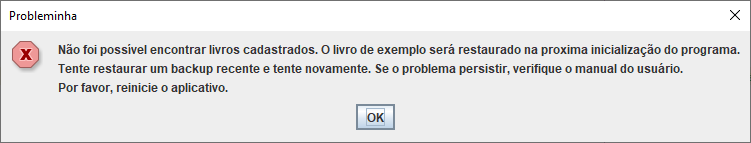

Ao abrir o programa você encontrará a seguinte janela:

A coluna à esquerda mostra a lista de livros cadastrados no programa. À direita você pode ver as informações do livro selecionado.
O programa carrega um livro exemplo (LEWIS, As Crônicas de Nárnia) na primeira inicialização.
Acima da lista de livros você pode filtrar a lista de acordo com o nome de exibição cadastrado. Note que a pesquisa é feita a partir do nome de exibição, e não pelas informações internas do livro. Na hora de cadastrar seus livros coloque no nome de exibição todas as informações que você deseja usar como filtro em sua pesquisa.
Para cancelar a pesquisa e mostrar a lista completa de livros, basta apagar qualquer texto do campo de pesquisa e clicar em Buscar.
Para adicionar um novo livro, abra o menu Arquivo e Novo. Então abrirá a seguinte tela:

Escolha um nome de exibição que será visto na lista de livros na tela inicial. Lembre-se que apenas os caracteres no Nome de Exibição serão usados como parâmetro para filtro.
Segue alguns exemplos de como usar o Nome de Exibição para melhor aproveitar a busca:
Para editar um livro, abra o menu Arquivo e Editar. Os campos de exibição da informação dos livros mudará de cor, indicando que agora é possível modificá-los. Após fazer as alterações desejadas, aberte no botão Salvar (outrora o botão de busca).
Não é possível editar o nome de exibição, sendo necessário o recadastro completo do livro.
Para cancelar a edição, basta clicar em qualquer livro na lista.
Sempre atualize a página (através do mesmo botão) quando fizer qualquer alteração na lista ou em algum livro.
Para remover um livro, basta selecionar o livro (in)desejado, abrir o menu Arquivo e Excluir. É recomendado manter um backup da sua biblioteca pois exclusões não podem ser desfeitas.
As configurações podem ser acessadas através do menu Opções e Configurações, que abre a seguinte janela:

Nesta janela, você pode escolher configurações de tema que mais agradem seu gosto, optando por um tema mais escuro, e também mudar o tamanho dos ícones nos menus.

As mudanças nas configurações de tema só poderão ser vistas na próxima vez em que o programa for iniciado.
Backups podem ser feitos através do botão Salvar Como. Uma janela abrirá para escolher o local em seu computador para salvar o backup de sua biblioteca. Da mesma forma, ao clicar no botão Selecionar Arquivo, você pode importar um backup previamente feito.
Este erro ocorre ao abrir o programa quando não é possível encontrar itens na biblioteca do usuário. Isso pode acontecer se algum dos arquivos for corrompido, ou se o programa for aberto sem nenhum livro cadastrado (Sair do programa após ter removido o livro de exemplo sem cadastrar outro).

Para resolver este problema basta reiniciar o programa. Se algum livro foi perdido, restaure um backup recente. Sempre mantenha bakcups atualizados de sua biblioteca.
Se o problema persistir, entre em contato com o desenvolvedor.